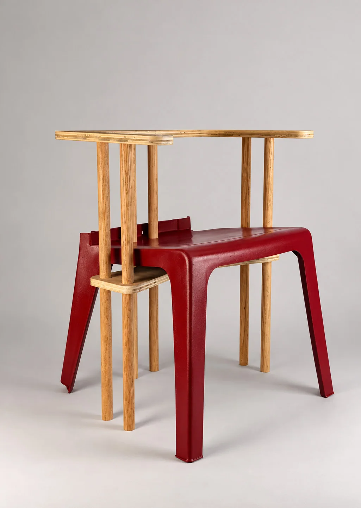
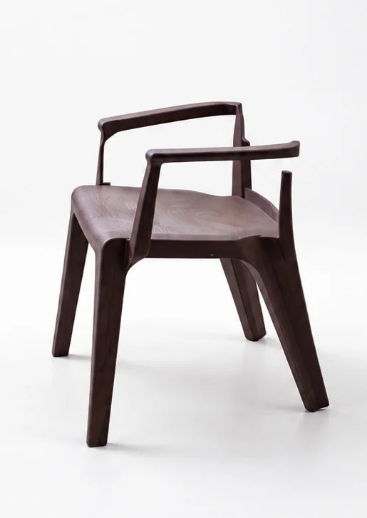
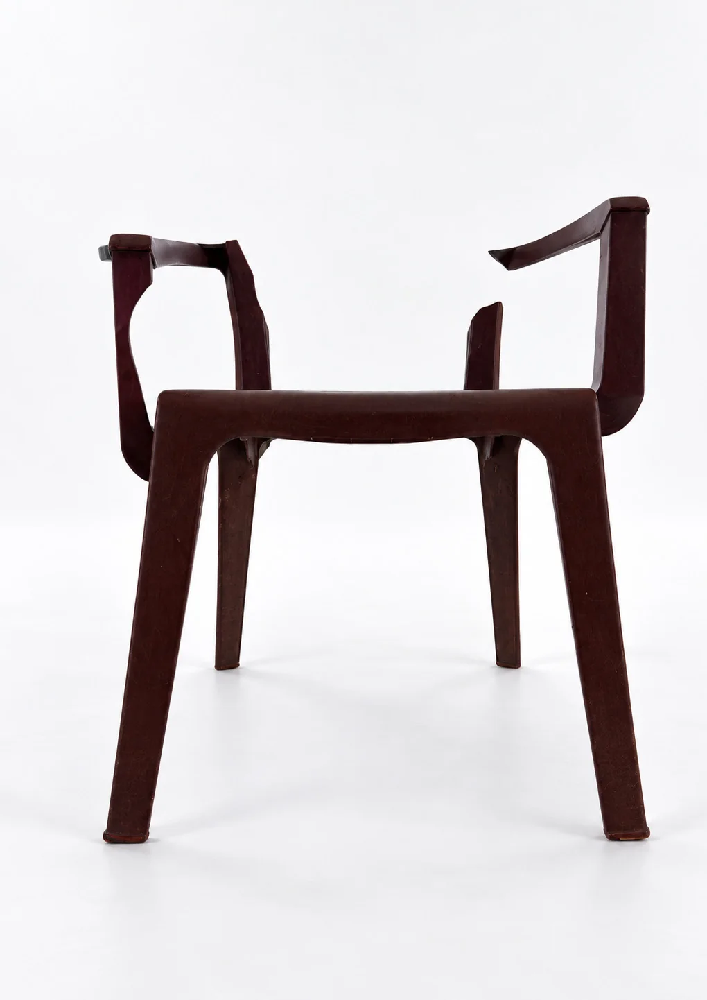
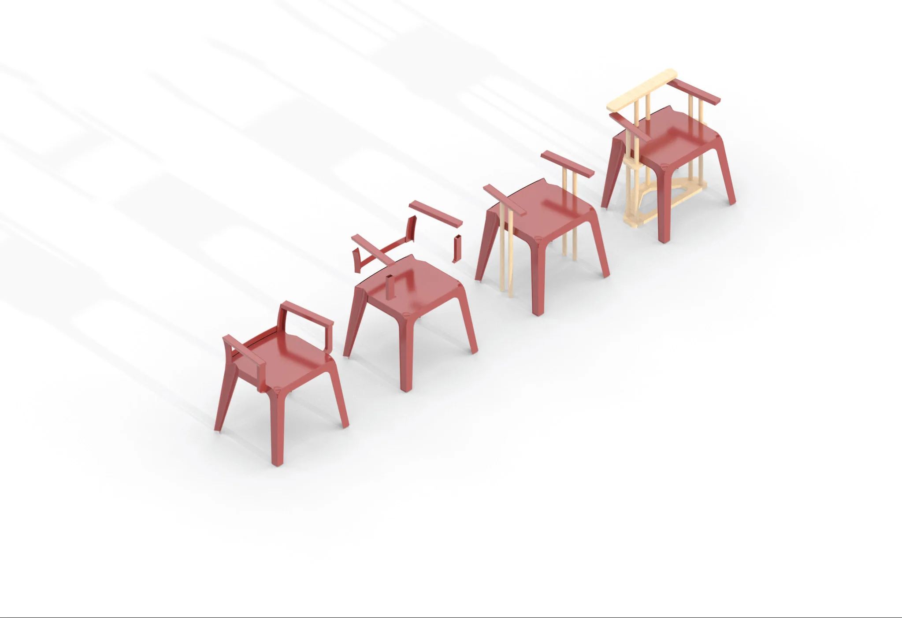
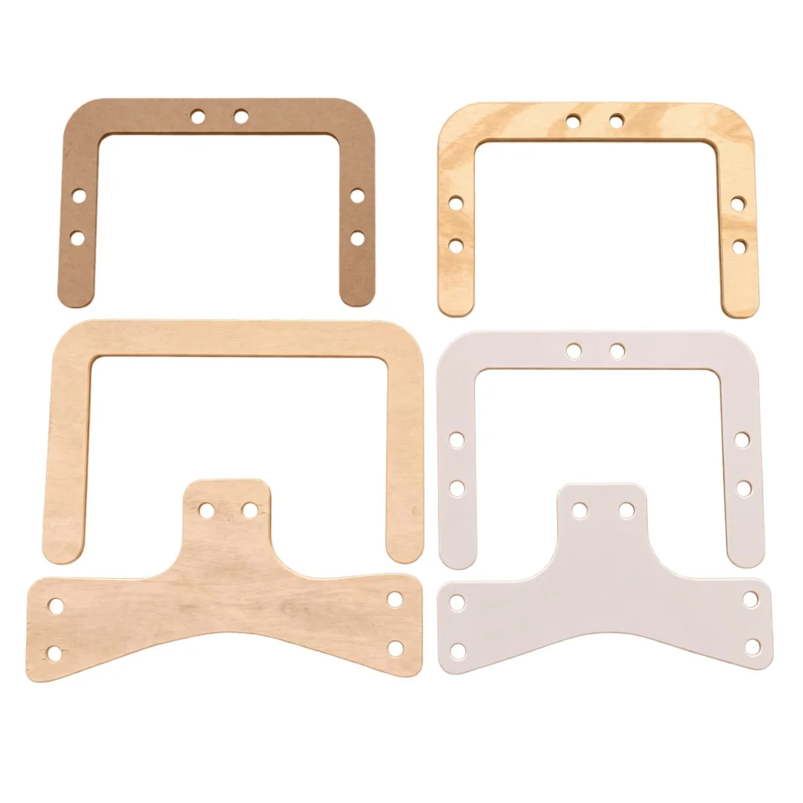
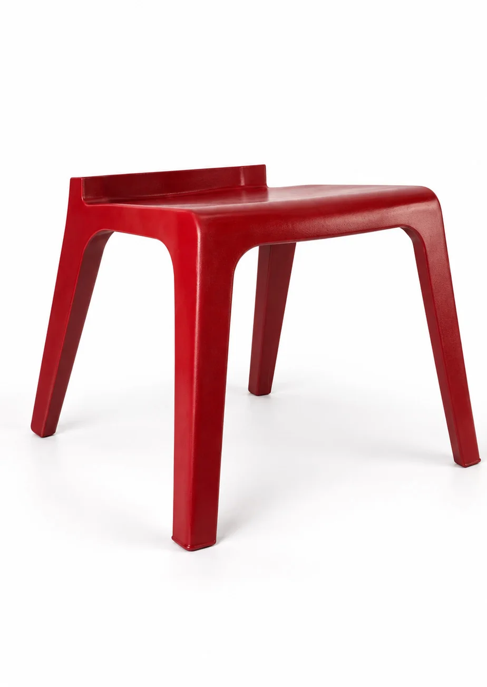

ALTER
A damaged Monobloc, reworked through wood and repair.
- Year
- Fall 2026
- Context
- Circular Design Studio · DESG 4005
- Materials
- Existing plastic chair · Plywood · Oak dowels
- Process
- Assessment · CAD · CNC milling

The project
Let the repair
change the form.
A broken backrest and damaged arms became the starting point for a different chair. ALTER retains the plastic seat and legs, then introduces a plywood upper structure and oak dowels.
The material contrast makes the intervention visible. The repair develops from a set of replacement parts into one continuous arm-and-back element.
01 / Assessment
Find what
can stay.
The incoming burgundy Monobloc had a fractured backrest and damaged arm supports. A condition assessment established the areas to remove and the seat-and-leg shell to retain in the redesign.
These two views record the starting condition, before the damaged upper sections were cut away.


02 / Repair plan
Build from
the surviving shell.
The first repair plan translated the damaged areas into a sequence: remove the failed upper sections, introduce vertical dowels, then connect a wooden backrest and supports to the remaining shell.
The model sequence below records that early proposal. It established the repair logic before the upper structure was revised into a continuous piece.

03 / Revision
Separate parts.
One continuous top.
The revised plan joins the arms and back into a continuous U-shaped plywood element, supported by one-inch oak dowels and a lower brace. This gives the new upper structure a clearer relationship to the retained plastic base.
Flat component prototypes explore the outline, hole positions, and finish of the replacement parts before assembly.

04 / Assembly
Two materials.
A new relationship.
With the failed arms and back removed, the plastic shell becomes the base for the new wooden structure. The plywood top connects the armrests and back; the dowels and lower brace complete the addition.
The repair remains legible: the original burgundy body and pale wood each keep their identity. ALTER uses that contrast to give a damaged everyday object a new form.
